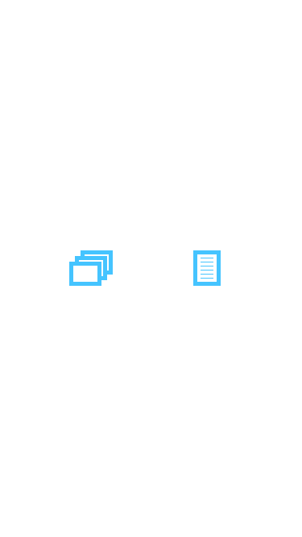
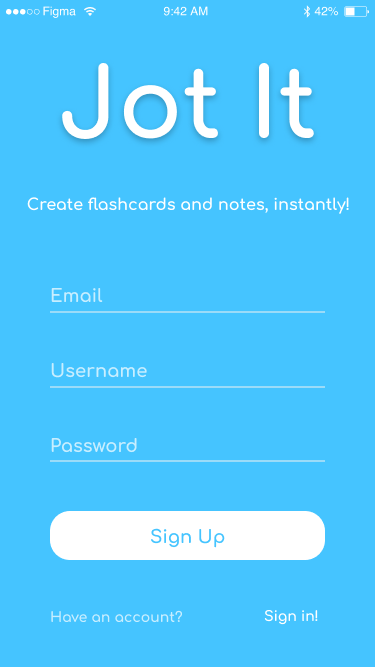
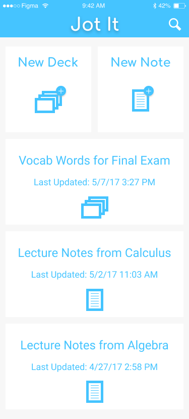
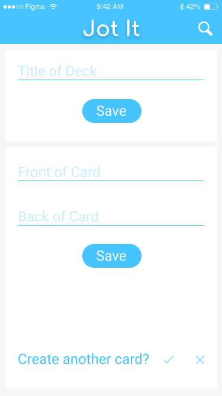

Jot It - Mobile UI Project
Jot It is for the student with no time. It is for the student who needs to make flash cards or take notes on the fly.
The project was designed using Figma, a lightweight prototyping application.
In The Beginning
Trying to keep the user interface simple, with content as the focus, I designed the color scheme and layout to be as minimal as possible to allow for fluid transitions.

With an onslaught of buttons, it started to look cluttered and text started to get redundant.
Let's Change That
Realizing the disorganization of the UI and trying to keep the transitions between functions as fluid as possible, I designed icons to replace some keywords and actions in the application.
   The new UI utilizes the icons in such a way that it is easier and quicker to follow how the information is supposed to flow.
You can see the complete prototype here.
What I Learned
I learned that, especially with Jot It, design should revolve around the data it serves to provide or retrieve.
I also realized during the designing of the product, to stop thinking. What I mean by that, is that there are many times when we use mobile applications mindlessly. This is because we became conditioned to that certain aspect of the user interface. The aspect could range from location of a certain element to the type of purpose it serves.
With that in mind, I designed Jot-It in such a way that it can be mindlessly used by students so that they can get to the function of the application they need to without thinking, resulting in more efficient usage and swifter work flow.